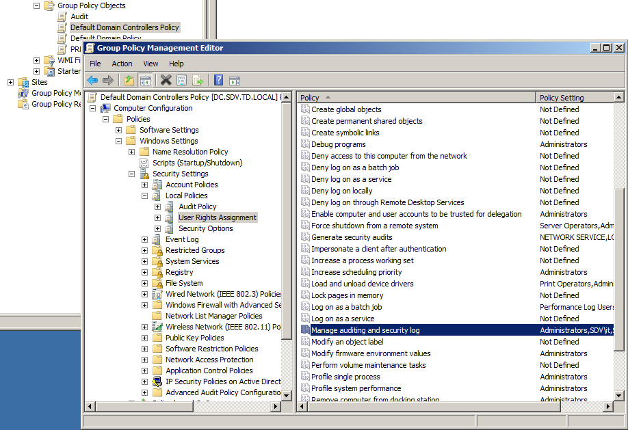
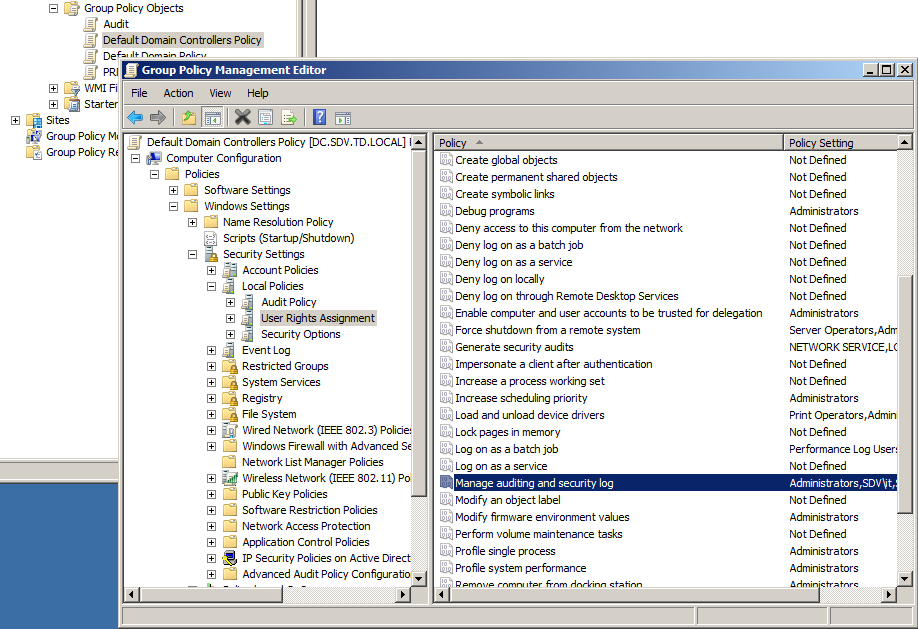

If you do not want to grant domain admin rights to the service account, you can create a
less priviledged one. To create an account which has all required rights please perfrom the
following steps. On any Domain Controller that has Group policy management: Step 1.
Enable Manage auditing and security log user rights for this account:

Step 2. Add the service account to the required security groups:
Step 3. On every monitored Domain Controller enable WMI access
Step 4. Configure DCOM settings
NOTE: steps 3 and 4 might require a reboot to apply new settings
Step 5. On the machine where NetWrix Account Lockout Examiner is installed grant local administrator rights to the service account.
Step 6: On all machines that need to be examined by Account Lockout Exmainer grant the local administrator rights to the service account. This can be done manually or by means of Group policy. Local admin rights are also necessary to find the root proocess causing invalid logons.
- Run Group Policy Management
- Navigate to the Group Policy Object which is applied to all Domain Controllers (Default Domain Controllers Policy, for example)
- Right click on it and select Edit
- Expand Computer Configuration -> Windows Settings -> Security Settings -> Local Policies -> User Rights Assignment
- Double click on the Manage auditing and security log policy
- Click Add user or group, specify the Account Lockout Examiner service account and click OK

Step 2. Add the service account to the required security groups:
- Run Active Directory Users and Computers
- Expand <Domain name> - Built-in
- Click the Account Operators group and select Properties
- Go to the Members tab and add the user account you want to use for the Account Lockout Examiner service to the list.
- For Windows 2008 and above Domain Controllers, one additional step is required: Add the service account to the Event Log Readers group.
Step 3. On every monitored Domain Controller enable WMI access
- Run Computer managemnet (Start->Administrative Tools->Computer Management)
- Expand Services and Applications -> WMI Control.
- Right-click on it and select Properties.
- Go to the Security tab and expand Root -> CIMV2.
- Highlight CIMV2 and click the Security button at the bottom of the window.
- Add the user account you want to use for the Account Lockout Examiner service to the list
- Grant it with Remote Enable permission (put a check in the Allow checkbox).
Step 4. Configure DCOM settings
- Open Component Services (Start -> Programs -> Administrative Tools -> Component Services).
- Navigate to Component Services - Computers - My Computer. Right click it and select Properties.
- Go to the COM Security tab.
- Click the Edit Limits button in the Launch and Activation Permissions group box.
- Add the user account you want to use for the Account Lockout Examiner service to the top window.
- Set Allow checbox for the Remote Activation option.
NOTE: steps 3 and 4 might require a reboot to apply new settings
Step 5. On the machine where NetWrix Account Lockout Examiner is installed grant local administrator rights to the service account.
- Run Computer management
- Expand System tools - Local users and groups - Groups
- Right click Administrators group and select Add to group
- Clcik Add and specify the service account. Click Ok
Step 6: On all machines that need to be examined by Account Lockout Exmainer grant the local administrator rights to the service account. This can be done manually or by means of Group policy. Local admin rights are also necessary to find the root proocess causing invalid logons.